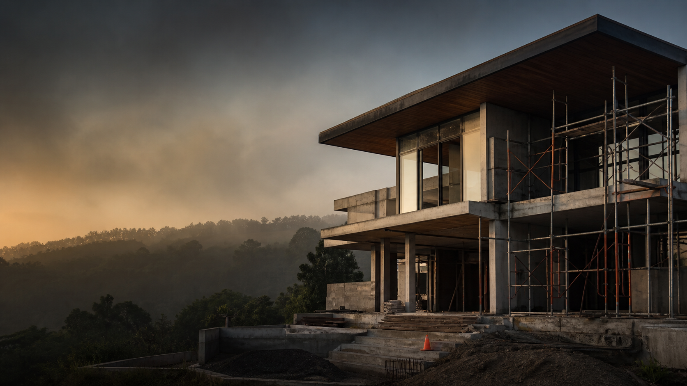

Bangun baru
Hunian dan ruang usaha dari pondasi sampai siap digunakan, dengan koordinasi lapangan yang rapi.

Bandung & sekitarnya
HD Karya Bandung merancang dan membangun hunian serta ruang usaha dengan proses yang terbuka, detail yang disiplin, dan hasil yang relevan untuk keseharian Anda.
Cara kami membangun
Dari struktur hingga sentuhan akhir, keputusan kami berangkat dari fungsi ruang, karakter material, dan ketenangan proses.
Layanan inti
Kami menyatukan perencanaan, eksekusi, dan pengawasan agar setiap tahap proyek bergerak dengan jelas.
Hunian dan ruang usaha dari pondasi sampai siap digunakan, dengan koordinasi lapangan yang rapi.
Menyusun ulang ruang yang telah ada tanpa menghilangkan apa yang membuatnya berharga.
Menghubungkan bangunan, cahaya, dan lanskap untuk pengalaman tiba yang lebih utuh.
Pengerjaan interior yang mempertimbangkan alur, ketahanan, dan karakter material sejak awal.
Fokus proyek
Setiap proyek punya ritme sendiri. Kami menerjemahkan kebutuhan, batasan lokasi, dan gaya hidup menjadi rangkaian keputusan yang masuk akal untuk dibangun.
Ceritakan kebutuhan AndaProses kerja
Kami mulai dari kebutuhan, lokasi, anggaran, dan hal yang tidak boleh dikompromikan.
Ruang, material, tahapan kerja, dan titik keputusan dipetakan agar semua orang bergerak selaras.
Eksekusi lapangan dipantau dengan komunikasi berkala dan perhatian pada detail yang terlihat maupun tersembunyi.
"Kami percaya bangunan yang baik tidak perlu berteriak. Ia terasa tepat, bekerja dengan tenang, dan memberi ruang untuk hidup berkembang."
HD KARYA BANDUNGMulai dari percakapan
Bagikan gambaran singkatnya. Kami akan menyiapkan percakapan pertama yang lebih terarah.